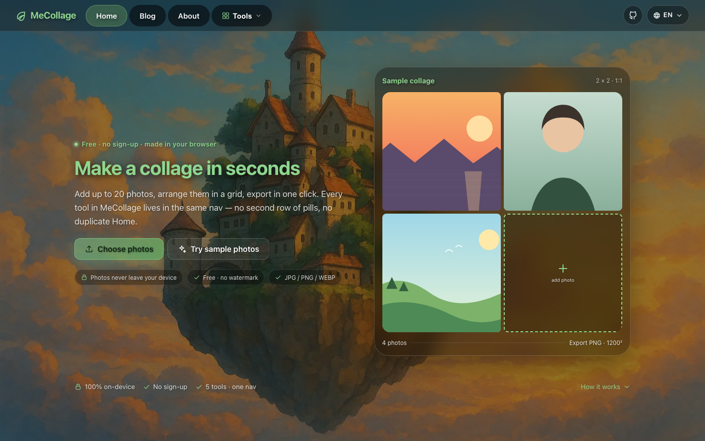

1

导航 IA · 1440 / 390
把两层导航收成一条single-layer-nav.html
问题：全局 nav（Home/Blog/About/Square Image）+ 84px 工具 nav（5 个 pill）两层；Home 出现 2–3 次；GitHub 占主导航位；R1 只修了移动端首屏。
方案：品牌 + Home/Blog/About + Tools 下拉（5 个工具一处入口，工具页触发器显示当前工具名）+ 语言；移动复用 R1 56px 顶栏 + 菜单工具分组。所有项仍是真实 <a href>。
增益：桌面少一层、工具入口从 3 处收敛到 1 处；移动目标 ≤64px、无横向溢出、44px 触控。